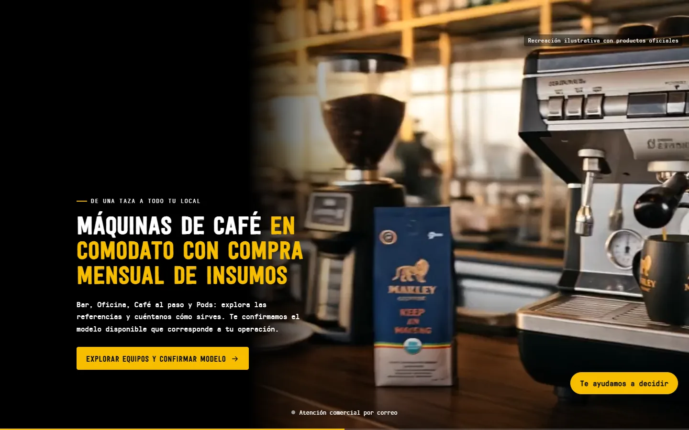

Dependencia de marca, fricción móvil y opacidad en el comodato
Aunque el sitio promedia ~98.546 visitas mensuales (77 % desde móvil), el 78 % llega por búsquedas de marca; no capta demanda genérica B2B donde competidores con menor autoridad rankean fichas directas, y apenas 1,5 % proviene de motores de IA. Una cotización real de prueba tardó 13 días (6 al 19 de octubre), confirmando desconfianza en torno al comodato, demoras en soporte técnico y límites de trazabilidad en Jump.
Ver desglose de segmentos y línea base del brief oficial
Segmentos prioritarios: el brief documenta 3.390 puntos y 4.000 máquinas repartidos en HORECA (36 %), oficinas OCS (12 %), conveniencia (9 %) y panaderías (6 %). En coherencia con la estructura HORECA, oficinas y conveniencia, el prototipo ordena cuatro recorridos concretos de comprador (hotel, restaurante, cafetería y oficina) más escenarios ilustrativos de panadería y conveniencia.
Indicadores de partida del brief: 18 % de reposición digital HORECA (meta 40 %), 6,8 % de quiebres OCS (meta reducir 30 % y OTIF ≥ 96 %), NPS 42 (meta 52), retención 86 % (meta 90 %), +25 % en leads B2B y +8 % en puntos activos.

Propuesta visual orientada a resolver la promesa B2B antes del formulario.